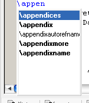

To check for a possible completion of a given keyword, just type the first two char (commands including backslash) and press CTRL+SPACE.

If only one possible command or environment have been found, the result is inserted immediatly. If two or more possibilities exist, a listbox with possible completions is shown. Entries provided by a document class are shown with bold face.
Environments are expanded automatically with appropriate \begin and \end commands. For example:
Pressing CTRL + SPACE changes "tabu" to
A lot of users have their own document classes and/or style files which nice commands ease up their daily work. You may TeXnicCenter make searching these packages and create a XML file containing your commands and environments.
To scan a directory for style file and document classes, use the "Search packages" command given under "Extras: Search for packages".
In the first dialog you will be asked for a directory which contains your personal files. The search considers also including subdirectories, so scanning c:\texmf will find all packages and classes of your LaTeX distribution.
During scan a dialog box informs you about scanned files and directories.
After search has finished, a second dialog asks you for a directory to save the composed XML file named 'packages,xml'.
The contents of this file may be merged with the contents of the provided 'packages.xml' file which is located in the directory where TeXnicCenter is installed in.